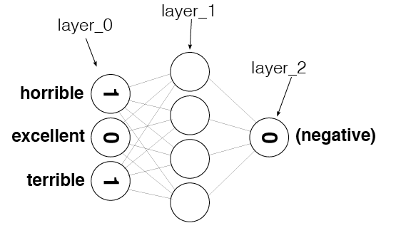

3. Sentiment Analysis end-to-end example¶
This example is brought to you by Udacity - consider doing the great Udacity Deep Learning course. Find out more here.
These are my own personal notes
In this notebook, the aium is to build TODO
We begin by looking at the dataset we have:
reviews.txt: reviews of a movie
labels.txt: positive/negative label associated with the movie
We will use the python open() function to open the file, with the parameter 'r' to read the file. Using readlines will return a list made up of each line in the file, returned as a list item. Hence, each character will be an item in the list.
review_file = open('sentiment_data/reviews.txt', 'r')
reviews = list(map(lambda x : x[:-1], review_file.readlines()))
review_file.close()
label_file = open('sentiment_data/labels.txt', 'r')
labels = list(map(lambda x : x[:-1].upper(), label_file.readlines()))
label_file.close()
Now lets find some information out about our data.
print(f'Size of our data: {len(reviews)}')
print(f'No of labels: {len(labels)}')
print('\nNow, lets see one row of our data. First feature in our data:')
print(reviews[0])
print('\nPrediction:')
print(labels[0])
Size of our data: 25000
No of labels: 25000
Now, lets see one row of our data. First feature in our data:
bromwell high is a cartoon comedy . it ran at the same time as some other programs about school life such as teachers . my years in the teaching profession lead me to believe that bromwell high s satire is much closer to reality than is teachers . the scramble to survive financially the insightful students who can see right through their pathetic teachers pomp the pettiness of the whole situation all remind me of the schools i knew and their students . when i saw the episode in which a student repeatedly tried to burn down the school i immediately recalled . . . . . . . . . at . . . . . . . . . . high . a classic line inspector i m here to sack one of your teachers . student welcome to bromwell high . i expect that many adults of my age think that bromwell high is far fetched . what a pity that it isn t
Prediction:
POSITIVE
3.1. Now, lets build up a hypothesis¶
We will begin by looking at our data, and trying to see what conclusions we can draw. This is ofter called the exploratory phase. We will begin by looking at some random predictions…
def print_review_with_label(ith_row):
print(labels[ith_row] + '\t:\t' + reviews[ith_row][:80] + '...')
Using the function above, we can beautifully print our data; feature along with its prediction.
print("labels.txt \t : \t reviews.txt\n")
print_review_with_label(2137)
print_review_with_label(12816)
print_review_with_label(6267)
print_review_with_label(21934)
labels.txt : reviews.txt
NEGATIVE : this movie is terrible but it has some good effects . ...
POSITIVE : adrian pasdar is excellent is this film . he makes a fascinating woman . ...
NEGATIVE : comment this movie is impossible . is terrible very improbable bad interpretat...
POSITIVE : excellent episode movie ala pulp fiction . days suicides . it doesnt get more...
We will be using the Counter python class throughout this section, as it provides a nice way to count the occurances of words.
from collections import Counter
import numpy as np
positive_words_counter = Counter()
negative_words_counter = Counter()
total_words_counter = Counter()
example_counter_with_stuff = Counter([1,2,3,4,4,4])
def counter_pretty_print():
print('positive counter: ', positive_words_counter)
print('negative counter: ', negative_words_counter)
print('total words counter: ', total_words_counter)
print('At this stage, our counters are empty...')
counter_pretty_print()
print('Here is a test counter: ', example_counter_with_stuff)
At this stage, our counters are empty...
positive counter: Counter()
negative counter: Counter()
total words counter: Counter()
Here is a test counter: Counter({4: 3, 1: 1, 2: 1, 3: 1})
Now, lets fill out our three counters.
# for each row in our dataset
for sentence_no in range(len(reviews)):
# for each word in our sentence
for word in reviews[sentence_no].split(' '):
# if it is positive - add a positive counter
if labels[sentence_no] == 'POSITIVE':
positive_words_counter[word] +=1
# if it is negative - add to negative counter
if labels[sentence_no] == 'NEGATIVE':
negative_words_counter[word] +=1
# regardless, add to total word counter
total_words_counter[word] +=1
# lets take a look at the most common words.
print('Most common positive words:\n')
positive_words_counter.most_common()
Most common positive words:
[('', 550468),
('the', 173324),
('.', 159654),
('and', 89722),
('a', 83688),
('of', 76855),
('to', 66746),
('is', 57245),
('in', 50215),
('br', 49235),
('it', 48025),
('i', 40743),
('that', 35630),
('this', 35080),
('s', 33815),
('as', 26308),
('with', 23247),
('for', 22416),
('was', 21917),
('film', 20937),
('but', 20822),
('movie', 19074),
('his', 17227),
('on', 17008),
('you', 16681),
('he', 16282),
('are', 14807),
('not', 14272),
('t', 13720),
('one', 13655),
('have', 12587),
('be', 12416),
('by', 11997),
('all', 11942),
('who', 11464),
('an', 11294),
('at', 11234),
('from', 10767),
('her', 10474),
('they', 9895),
('has', 9186),
('so', 9154),
('like', 9038),
('about', 8313),
('very', 8305),
('out', 8134),
('there', 8057),
('she', 7779),
('what', 7737),
('or', 7732),
('good', 7720),
('more', 7521),
('when', 7456),
('some', 7441),
('if', 7285),
('just', 7152),
('can', 7001),
('story', 6780),
('time', 6515),
('my', 6488),
('great', 6419),
('well', 6405),
('up', 6321),
('which', 6267),
('their', 6107),
('see', 6026),
('also', 5550),
('we', 5531),
('really', 5476),
('would', 5400),
('will', 5218),
('me', 5167),
('had', 5148),
('only', 5137),
('him', 5018),
('even', 4964),
('most', 4864),
('other', 4858),
('were', 4782),
('first', 4755),
('than', 4736),
('much', 4685),
('its', 4622),
('no', 4574),
('into', 4544),
('people', 4479),
('best', 4319),
('love', 4301),
('get', 4272),
('how', 4213),
('life', 4199),
('been', 4189),
('because', 4079),
('way', 4036),
('do', 3941),
('made', 3823),
('films', 3813),
('them', 3805),
('after', 3800),
('many', 3766),
('two', 3733),
('too', 3659),
('think', 3655),
('movies', 3586),
('characters', 3560),
('character', 3514),
('don', 3468),
('man', 3460),
('show', 3432),
('watch', 3424),
('seen', 3414),
('then', 3358),
('little', 3341),
('still', 3340),
('make', 3303),
('could', 3237),
('never', 3226),
('being', 3217),
('where', 3173),
('does', 3069),
('over', 3017),
('any', 3002),
('while', 2899),
('know', 2833),
('did', 2790),
('years', 2758),
('here', 2740),
('ever', 2734),
('end', 2696),
('these', 2694),
('such', 2590),
('real', 2568),
('scene', 2567),
('back', 2547),
('those', 2485),
('though', 2475),
('off', 2463),
('new', 2458),
('your', 2453),
('go', 2440),
('acting', 2437),
('plot', 2432),
('world', 2429),
('scenes', 2427),
('say', 2414),
('through', 2409),
('makes', 2390),
('better', 2381),
('now', 2368),
('work', 2346),
('young', 2343),
('old', 2311),
('ve', 2307),
('find', 2272),
('both', 2248),
('before', 2177),
('us', 2162),
('again', 2158),
('series', 2153),
('quite', 2143),
('something', 2135),
('cast', 2133),
('should', 2121),
('part', 2098),
('always', 2088),
('lot', 2087),
('another', 2075),
('actors', 2047),
('director', 2040),
('family', 2032),
('between', 2016),
('own', 2016),
('m', 1998),
('may', 1997),
('same', 1972),
('role', 1967),
('watching', 1966),
('every', 1954),
('funny', 1953),
('doesn', 1935),
('performance', 1928),
('few', 1918),
('bad', 1907),
('look', 1900),
('re', 1884),
('why', 1855),
('things', 1849),
('times', 1832),
('big', 1815),
('however', 1795),
('actually', 1790),
('action', 1789),
('going', 1783),
('bit', 1757),
('comedy', 1742),
('down', 1740),
('music', 1738),
('must', 1728),
('take', 1709),
('saw', 1692),
('long', 1690),
('right', 1688),
('fun', 1686),
('fact', 1684),
('excellent', 1683),
('around', 1674),
('didn', 1672),
('without', 1671),
('thing', 1662),
('thought', 1639),
('got', 1635),
('each', 1630),
('day', 1614),
('feel', 1597),
('seems', 1596),
('come', 1594),
('done', 1586),
('beautiful', 1580),
('especially', 1572),
('played', 1571),
('almost', 1566),
('want', 1562),
('yet', 1556),
('give', 1553),
('pretty', 1549),
('last', 1543),
('since', 1519),
('different', 1504),
('although', 1501),
('gets', 1490),
('true', 1487),
('interesting', 1481),
('job', 1470),
('enough', 1455),
('our', 1454),
('shows', 1447),
('horror', 1441),
('woman', 1439),
('tv', 1400),
('probably', 1398),
('father', 1395),
('original', 1393),
('girl', 1390),
('point', 1379),
('plays', 1378),
('wonderful', 1372),
('far', 1358),
('course', 1358),
('john', 1350),
('rather', 1340),
('isn', 1328),
('ll', 1326),
('later', 1324),
('dvd', 1324),
('whole', 1310),
('war', 1310),
('d', 1307),
('found', 1306),
('away', 1306),
('screen', 1305),
('nothing', 1300),
('year', 1297),
('once', 1296),
('hard', 1294),
('together', 1280),
('set', 1277),
('am', 1277),
('having', 1266),
('making', 1265),
('place', 1263),
('might', 1260),
('comes', 1260),
('sure', 1253),
('american', 1248),
('play', 1245),
('kind', 1244),
('perfect', 1242),
('takes', 1242),
('performances', 1237),
('himself', 1230),
('worth', 1221),
('everyone', 1221),
('anyone', 1214),
('actor', 1203),
('three', 1201),
('wife', 1196),
('classic', 1192),
('goes', 1186),
('ending', 1178),
('version', 1168),
('star', 1149),
('enjoy', 1146),
('book', 1142),
('nice', 1132),
('everything', 1128),
('during', 1124),
('put', 1118),
('seeing', 1111),
('least', 1102),
('house', 1100),
('high', 1095),
('watched', 1094),
('loved', 1087),
('men', 1087),
('night', 1082),
('anything', 1075),
('believe', 1071),
('guy', 1071),
('top', 1063),
('amazing', 1058),
('hollywood', 1056),
('looking', 1053),
('main', 1044),
('definitely', 1043),
('gives', 1031),
('home', 1029),
('seem', 1028),
('episode', 1023),
('audience', 1020),
('sense', 1020),
('truly', 1017),
('special', 1011),
('second', 1009),
('short', 1009),
('fan', 1009),
('mind', 1005),
('human', 1001),
('recommend', 999),
('full', 996),
('black', 995),
('help', 991),
('along', 989),
('trying', 987),
('small', 986),
('death', 985),
('friends', 981),
('remember', 974),
('often', 970),
('said', 966),
('favorite', 962),
('heart', 959),
('early', 957),
('left', 956),
('until', 955),
('script', 954),
('let', 954),
('maybe', 937),
('today', 936),
('live', 934),
('less', 934),
('moments', 933),
('others', 929),
('brilliant', 926),
('shot', 925),
('liked', 923),
('become', 916),
('won', 915),
('used', 910),
('style', 907),
('mother', 895),
('lives', 894),
('came', 893),
('stars', 890),
('cinema', 889),
('looks', 885),
('perhaps', 884),
('read', 882),
('enjoyed', 879),
('boy', 875),
('drama', 873),
('highly', 871),
('given', 870),
('playing', 867),
('use', 864),
('next', 859),
('women', 858),
('fine', 857),
('effects', 856),
('kids', 854),
('entertaining', 853),
('need', 852),
('line', 850),
('works', 848),
('someone', 847),
('mr', 836),
('simply', 835),
('picture', 833),
('children', 833),
('face', 831),
('keep', 831),
('friend', 831),
('dark', 830),
('overall', 828),
('certainly', 828),
('minutes', 827),
('wasn', 824),
('history', 822),
('finally', 820),
('couple', 816),
('against', 815),
('son', 809),
('understand', 808),
('lost', 807),
('michael', 805),
('else', 801),
('throughout', 798),
('fans', 797),
('city', 792),
('reason', 789),
('written', 787),
('production', 787),
('several', 784),
('school', 783),
('based', 781),
('rest', 781),
('try', 780),
('dead', 776),
('hope', 775),
('strong', 768),
('white', 765),
('tell', 759),
('itself', 758),
('half', 753),
('person', 749),
('sometimes', 746),
('past', 744),
('start', 744),
('genre', 743),
('beginning', 739),
('final', 739),
('town', 738),
('art', 734),
('humor', 732),
('game', 732),
('yes', 731),
('idea', 731),
('late', 730),
('becomes', 729),
('despite', 729),
('able', 726),
('case', 726),
('money', 723),
('child', 721),
('completely', 721),
('side', 719),
('camera', 716),
('getting', 714),
('instead', 712),
('soon', 702),
('under', 700),
('viewer', 699),
('age', 697),
('days', 696),
('stories', 696),
('felt', 694),
('simple', 694),
('roles', 693),
('video', 688),
('name', 683),
('either', 683),
('doing', 677),
('turns', 674),
('wants', 671),
('close', 671),
('title', 669),
('wrong', 668),
('went', 666),
('james', 665),
('evil', 659),
('budget', 657),
('episodes', 657),
('relationship', 655),
('fantastic', 653),
('piece', 653),
('david', 651),
('turn', 648),
('murder', 646),
('parts', 645),
('brother', 644),
('absolutely', 643),
('head', 643),
('experience', 642),
('eyes', 641),
('sex', 638),
('direction', 637),
('called', 637),
('directed', 636),
('lines', 634),
('behind', 633),
('sort', 632),
('actress', 631),
('lead', 630),
('oscar', 628),
('including', 627),
('example', 627),
('known', 625),
('musical', 625),
('chance', 621),
('score', 620),
('already', 619),
('feeling', 619),
('hit', 619),
('voice', 615),
('moment', 612),
('living', 612),
('low', 610),
('supporting', 610),
('ago', 609),
('themselves', 608),
('reality', 605),
('hilarious', 605),
('jack', 604),
('told', 603),
('hand', 601),
('quality', 600),
('moving', 600),
('dialogue', 600),
('song', 599),
('happy', 599),
('matter', 598),
('paul', 598),
('light', 594),
('future', 593),
('entire', 592),
('finds', 591),
('gave', 589),
('laugh', 587),
('released', 586),
('expect', 584),
('fight', 581),
('particularly', 580),
('cinematography', 579),
('police', 579),
('whose', 578),
('type', 578),
('sound', 578),
('view', 573),
('enjoyable', 573),
('number', 572),
('romantic', 572),
('husband', 572),
('daughter', 572),
('documentary', 571),
('self', 570),
('superb', 569),
('modern', 569),
('took', 569),
('robert', 569),
('mean', 566),
('shown', 563),
('coming', 561),
('important', 560),
('king', 559),
('leave', 559),
('change', 558),
('somewhat', 555),
('wanted', 555),
('tells', 554),
('events', 552),
('run', 552),
('career', 552),
('country', 552),
('heard', 550),
('season', 550),
('greatest', 549),
('girls', 549),
('etc', 547),
('care', 546),
('starts', 545),
('english', 542),
('killer', 541),
('tale', 540),
('guys', 540),
('totally', 540),
('animation', 540),
('usual', 539),
('miss', 535),
('opinion', 535),
('easy', 531),
('violence', 531),
('songs', 530),
('british', 528),
('says', 526),
('realistic', 525),
('writing', 524),
('writer', 522),
('act', 522),
('comic', 521),
('thriller', 519),
('television', 517),
('power', 516),
('ones', 515),
('kid', 514),
('york', 513),
('novel', 513),
('alone', 512),
('problem', 512),
('attention', 509),
('involved', 508),
('kill', 507),
('extremely', 507),
('seemed', 506),
('hero', 505),
('french', 505),
('rock', 504),
('stuff', 501),
('wish', 499),
('begins', 498),
('taken', 497),
('sad', 497),
('ways', 496),
('richard', 495),
('knows', 494),
('atmosphere', 493),
('similar', 491),
('surprised', 491),
('taking', 491),
('car', 491),
('george', 490),
('perfectly', 490),
('across', 489),
('team', 489),
('eye', 489),
('sequence', 489),
('room', 488),
('due', 488),
('among', 488),
('serious', 488),
('powerful', 488),
('strange', 487),
('order', 487),
('cannot', 487),
('b', 487),
('beauty', 486),
('famous', 485),
('happened', 484),
('tries', 484),
('herself', 484),
('myself', 484),
('class', 483),
('four', 482),
('cool', 481),
('release', 479),
('anyway', 479),
('theme', 479),
('opening', 478),
('entertainment', 477),
('slow', 475),
('ends', 475),
('unique', 475),
('exactly', 475),
('easily', 474),
('level', 474),
('o', 474),
('red', 474),
('interest', 472),
('happen', 471),
('crime', 470),
('viewing', 468),
('sets', 467),
('memorable', 467),
('stop', 466),
('group', 466),
('problems', 463),
('dance', 463),
('working', 463),
('sister', 463),
('message', 463),
('knew', 462),
('mystery', 461),
('nature', 461),
('bring', 460),
('believable', 459),
('thinking', 459),
('brought', 459),
('mostly', 458),
('disney', 457),
('couldn', 457),
('society', 456),
('lady', 455),
('within', 455),
('blood', 454),
('parents', 453),
('upon', 453),
('viewers', 453),
('meets', 452),
('form', 452),
('peter', 452),
('tom', 452),
('usually', 452),
('soundtrack', 452),
('local', 450),
('certain', 448),
('follow', 448),
('whether', 447),
('possible', 446),
('emotional', 445),
('killed', 444),
('above', 444),
('de', 444),
('god', 443),
('middle', 443),
('needs', 442),
('happens', 442),
('flick', 442),
('masterpiece', 441),
('period', 440),
('major', 440),
('named', 439),
('haven', 439),
('particular', 438),
('th', 438),
('earth', 437),
('feature', 437),
('stand', 436),
('words', 435),
('typical', 435),
('elements', 433),
('obviously', 433),
('romance', 431),
('jane', 430),
('yourself', 427),
('showing', 427),
('brings', 426),
('fantasy', 426),
('guess', 423),
('america', 423),
('unfortunately', 422),
('huge', 422),
('indeed', 421),
('running', 421),
('talent', 420),
('stage', 419),
('started', 418),
('leads', 417),
('sweet', 417),
('japanese', 417),
('poor', 416),
('deal', 416),
('incredible', 413),
('personal', 413),
('fast', 412),
('became', 410),
('deep', 410),
('hours', 409),
('giving', 408),
('nearly', 408),
('dream', 408),
('clearly', 407),
('turned', 407),
('obvious', 406),
('near', 406),
('cut', 405),
('surprise', 405),
('era', 404),
('body', 404),
('hour', 403),
('female', 403),
('five', 403),
('note', 399),
('learn', 398),
('truth', 398),
('except', 397),
('feels', 397),
('match', 397),
('tony', 397),
('filmed', 394),
('clear', 394),
('complete', 394),
('street', 393),
('eventually', 393),
('keeps', 393),
('older', 393),
('lots', 393),
('buy', 392),
('william', 391),
('stewart', 391),
('fall', 390),
('joe', 390),
('meet', 390),
('unlike', 389),
('talking', 389),
('shots', 389),
('rating', 389),
('difficult', 389),
('dramatic', 388),
('means', 388),
('situation', 386),
('wonder', 386),
('present', 386),
('appears', 386),
('subject', 386),
('comments', 385),
('general', 383),
('sequences', 383),
('lee', 383),
('points', 382),
('earlier', 382),
('gone', 379),
('check', 379),
('suspense', 378),
('recommended', 378),
('ten', 378),
('third', 377),
('business', 377),
('talk', 375),
('leaves', 375),
('beyond', 375),
('portrayal', 374),
('beautifully', 373),
('single', 372),
('bill', 372),
('plenty', 371),
('word', 371),
('whom', 370),
('falls', 370),
('scary', 369),
('non', 369),
('figure', 369),
('battle', 369),
('using', 368),
('return', 368),
('doubt', 367),
('add', 367),
('hear', 366),
('solid', 366),
('success', 366),
('jokes', 365),
('oh', 365),
('touching', 365),
('political', 365),
('hell', 364),
('awesome', 364),
('boys', 364),
('sexual', 362),
('recently', 362),
('dog', 362),
('please', 361),
('wouldn', 361),
('straight', 361),
('features', 361),
('forget', 360),
('setting', 360),
('lack', 360),
('married', 359),
('mark', 359),
('social', 357),
('interested', 356),
('adventure', 356),
('actual', 355),
('terrific', 355),
('sees', 355),
('brothers', 355),
('move', 354),
('call', 354),
('various', 353),
('theater', 353),
('dr', 353),
('animated', 352),
('western', 351),
('baby', 350),
('space', 350),
('leading', 348),
('disappointed', 348),
('portrayed', 346),
('aren', 346),
('screenplay', 345),
('smith', 345),
('towards', 344),
('hate', 344),
('noir', 343),
('outstanding', 342),
('decent', 342),
('kelly', 342),
('directors', 341),
('journey', 341),
('none', 340),
('looked', 340),
('effective', 340),
('storyline', 339),
('caught', 339),
('sci', 339),
('fi', 339),
('cold', 339),
('mary', 339),
('rich', 338),
('charming', 338),
('popular', 337),
('rare', 337),
('manages', 337),
('harry', 337),
('spirit', 336),
('appreciate', 335),
('open', 335),
('moves', 334),
('basically', 334),
('acted', 334),
('inside', 333),
('boring', 333),
('century', 333),
('mention', 333),
('deserves', 333),
('subtle', 333),
('pace', 333),
('familiar', 332),
('background', 332),
('ben', 331),
('creepy', 330),
('supposed', 330),
('secret', 329),
('die', 328),
('jim', 328),
('question', 327),
('effect', 327),
('natural', 327),
('impressive', 326),
('rate', 326),
('language', 326),
('saying', 325),
('intelligent', 325),
('telling', 324),
('realize', 324),
('material', 324),
('scott', 324),
('singing', 323),
('dancing', 322),
('visual', 321),
('adult', 321),
('imagine', 321),
('kept', 320),
('office', 320),
('uses', 319),
('pure', 318),
('wait', 318),
('stunning', 318),
('review', 317),
('previous', 317),
('copy', 317),
('seriously', 317),
('reading', 316),
('create', 316),
('hot', 316),
('created', 316),
('magic', 316),
('somehow', 316),
('stay', 315),
('attempt', 315),
('escape', 315),
('crazy', 315),
('air', 315),
('frank', 315),
('hands', 314),
('filled', 313),
('expected', 312),
('average', 312),
('surprisingly', 312),
('complex', 311),
('quickly', 310),
('successful', 310),
('studio', 310),
('plus', 309),
('male', 309),
('co', 307),
('images', 306),
('casting', 306),
('following', 306),
('minute', 306),
('exciting', 306),
('members', 305),
('follows', 305),
('themes', 305),
('german', 305),
('reasons', 305),
('e', 305),
('touch', 304),
('edge', 304),
('free', 304),
('cute', 304),
('genius', 304),
('outside', 303),
('reviews', 302),
('admit', 302),
('ok', 302),
('younger', 302),
('fighting', 301),
('odd', 301),
('master', 301),
('recent', 300),
('thanks', 300),
('break', 300),
('comment', 300),
('apart', 299),
('emotions', 298),
('lovely', 298),
('begin', 298),
('doctor', 297),
('party', 297),
('italian', 297),
('la', 296),
('missed', 296),
...]
# lets take a look at the most common words.
print('\nMost common negative words:\n')
negative_words_counter.most_common()
Most common negative words:
[('', 561462),
('.', 167538),
('the', 163389),
('a', 79321),
('and', 74385),
('of', 69009),
('to', 68974),
('br', 52637),
('is', 50083),
('it', 48327),
('i', 46880),
('in', 43753),
('this', 40920),
('that', 37615),
('s', 31546),
('was', 26291),
('movie', 24965),
('for', 21927),
('but', 21781),
('with', 20878),
('as', 20625),
('t', 20361),
('film', 19218),
('you', 17549),
('on', 17192),
('not', 16354),
('have', 15144),
('are', 14623),
('be', 14541),
('he', 13856),
('one', 13134),
('they', 13011),
('at', 12279),
('his', 12147),
('all', 12036),
('so', 11463),
('like', 11238),
('there', 10775),
('just', 10619),
('by', 10549),
('or', 10272),
('an', 10266),
('who', 9969),
('from', 9731),
('if', 9518),
('about', 9061),
('out', 8979),
('what', 8422),
('some', 8306),
('no', 8143),
('her', 7947),
('even', 7687),
('can', 7653),
('has', 7604),
('good', 7423),
('bad', 7401),
('would', 7036),
('up', 6970),
('only', 6781),
('more', 6730),
('when', 6726),
('she', 6444),
('really', 6262),
('time', 6209),
('had', 6142),
('my', 6015),
('were', 6001),
('which', 5780),
('very', 5764),
('me', 5606),
('see', 5452),
('don', 5336),
('we', 5328),
('their', 5278),
('do', 5236),
('story', 5208),
('than', 5183),
('been', 5100),
('much', 5078),
('get', 5037),
('because', 4966),
('people', 4806),
('then', 4761),
('make', 4722),
('how', 4688),
('could', 4686),
('any', 4658),
('into', 4567),
('made', 4541),
('first', 4306),
('other', 4305),
('well', 4254),
('too', 4174),
('them', 4165),
('plot', 4154),
('movies', 4080),
('acting', 4056),
('will', 3993),
('way', 3989),
('most', 3919),
('him', 3858),
('after', 3838),
('its', 3655),
('think', 3643),
('also', 3608),
('characters', 3600),
('off', 3567),
('watch', 3550),
('character', 3506),
('did', 3506),
('why', 3463),
('being', 3393),
('better', 3358),
('know', 3334),
('over', 3316),
('seen', 3265),
('ever', 3263),
('never', 3259),
('your', 3233),
('where', 3219),
('two', 3173),
('little', 3096),
('films', 3077),
('here', 3027),
('m', 3000),
('nothing', 2990),
('say', 2982),
('end', 2954),
('something', 2942),
('should', 2920),
('many', 2909),
('does', 2871),
('thing', 2866),
('show', 2862),
('ve', 2829),
('scene', 2816),
('scenes', 2785),
('these', 2724),
('go', 2717),
('didn', 2646),
('great', 2640),
('watching', 2640),
('re', 2620),
('doesn', 2601),
('through', 2560),
('such', 2544),
('man', 2516),
('worst', 2480),
('actually', 2449),
('actors', 2437),
('life', 2429),
('back', 2424),
('while', 2418),
('director', 2405),
('funny', 2336),
('going', 2319),
('still', 2283),
('another', 2254),
('look', 2247),
('now', 2237),
('old', 2215),
('those', 2212),
('real', 2170),
('few', 2158),
('love', 2152),
('horror', 2150),
('before', 2147),
('want', 2141),
('minutes', 2126),
('pretty', 2115),
('best', 2094),
('though', 2091),
('same', 2081),
('script', 2074),
('work', 2027),
('every', 2025),
('seems', 2023),
('least', 2011),
('enough', 1997),
('down', 1988),
('original', 1983),
('guy', 1964),
('got', 1952),
('around', 1943),
('part', 1942),
('lot', 1892),
('anything', 1874),
('find', 1860),
('new', 1854),
('again', 1849),
('isn', 1849),
('point', 1845),
('things', 1839),
('fact', 1839),
('give', 1823),
('makes', 1814),
('take', 1800),
('thought', 1798),
('d', 1770),
('whole', 1768),
('long', 1761),
('years', 1759),
('however', 1740),
('gets', 1714),
('making', 1695),
('cast', 1694),
('big', 1662),
('might', 1658),
('interesting', 1648),
('money', 1638),
('us', 1628),
('right', 1625),
('far', 1619),
('quite', 1596),
('without', 1595),
('come', 1595),
('almost', 1574),
('ll', 1567),
('action', 1566),
('awful', 1557),
('kind', 1539),
('reason', 1534),
('am', 1530),
('looks', 1528),
('must', 1522),
('done', 1510),
('comedy', 1504),
('someone', 1490),
('trying', 1486),
('wasn', 1484),
('poor', 1481),
('boring', 1478),
('instead', 1478),
('saw', 1475),
('away', 1469),
('girl', 1463),
('probably', 1444),
('believe', 1434),
('sure', 1433),
('looking', 1430),
('stupid', 1428),
('anyone', 1418),
('times', 1406),
('maybe', 1404),
('world', 1404),
('rather', 1394),
('terrible', 1391),
('may', 1390),
('last', 1390),
('since', 1388),
('let', 1385),
('tv', 1382),
('hard', 1374),
('between', 1374),
('waste', 1358),
('woman', 1356),
('feel', 1354),
('effects', 1348),
('half', 1341),
('own', 1333),
('young', 1317),
('music', 1316),
('idea', 1312),
('sense', 1306),
('bit', 1298),
('having', 1280),
('book', 1278),
('found', 1267),
('put', 1263),
('series', 1263),
('goes', 1256),
('worse', 1249),
('said', 1230),
('comes', 1224),
('role', 1222),
('main', 1220),
('else', 1199),
('everything', 1197),
('yet', 1196),
('low', 1189),
('screen', 1188),
('supposed', 1186),
('actor', 1185),
('either', 1183),
('budget', 1179),
('ending', 1179),
('audience', 1178),
('set', 1177),
('family', 1170),
('left', 1169),
('completely', 1168),
('both', 1158),
('wrong', 1155),
('always', 1151),
('course', 1148),
('place', 1148),
('seem', 1147),
('watched', 1142),
('day', 1132),
('simply', 1130),
('shot', 1126),
('mean', 1117),
('special', 1102),
('dead', 1101),
('three', 1094),
('house', 1085),
('oh', 1084),
('night', 1083),
('read', 1082),
('less', 1067),
('high', 1066),
('year', 1064),
('camera', 1061),
('worth', 1057),
('our', 1056),
('try', 1051),
('horrible', 1046),
('sex', 1046),
('video', 1043),
('black', 1039),
('although', 1036),
('couldn', 1036),
('once', 1033),
('rest', 1022),
('dvd', 1021),
('line', 1018),
('played', 1017),
('fun', 1007),
('during', 1006),
('production', 1003),
('everyone', 1002),
('play', 993),
('mind', 990),
('version', 989),
('kids', 989),
('seeing', 988),
('american', 980),
('given', 978),
('used', 969),
('performance', 968),
('especially', 963),
('together', 963),
('tell', 959),
('women', 958),
('start', 956),
('need', 955),
('second', 953),
('takes', 950),
('each', 950),
('wife', 944),
('dialogue', 942),
('use', 940),
('problem', 938),
('star', 934),
('unfortunately', 931),
('himself', 929),
('doing', 926),
('death', 922),
('name', 921),
('lines', 919),
('killer', 914),
('getting', 913),
('help', 905),
('couple', 902),
('fan', 902),
('head', 898),
('crap', 895),
('guess', 888),
('piece', 884),
('nice', 880),
('different', 878),
('school', 876),
('later', 875),
('entire', 869),
('shows', 860),
('next', 858),
('john', 858),
('short', 857),
('seemed', 857),
('hollywood', 850),
('home', 848),
('true', 846),
('person', 846),
('absolutely', 842),
('sort', 840),
('care', 839),
('understand', 836),
('plays', 835),
('felt', 834),
('written', 829),
('title', 828),
('men', 822),
('until', 821),
('flick', 816),
('decent', 815),
('face', 814),
('friends', 810),
('stars', 807),
('job', 807),
('case', 807),
('itself', 804),
('yes', 801),
('perhaps', 800),
('went', 797),
('wanted', 797),
('called', 796),
('annoying', 795),
('ridiculous', 790),
('tries', 790),
('laugh', 788),
('evil', 787),
('along', 786),
('top', 785),
('hour', 784),
('full', 783),
('came', 780),
('writing', 780),
('keep', 770),
('totally', 767),
('playing', 766),
('god', 765),
('won', 764),
('guys', 763),
('already', 762),
('gore', 757),
('direction', 748),
('save', 746),
('lost', 745),
('example', 744),
('sound', 742),
('war', 741),
('attempt', 735),
('car', 733),
('except', 733),
('moments', 732),
('blood', 732),
('obviously', 730),
('act', 729),
('remember', 728),
('kill', 727),
('truly', 726),
('white', 726),
('father', 726),
('b', 725),
('thinking', 720),
('ok', 716),
('finally', 716),
('turn', 711),
('quality', 701),
('lack', 698),
('style', 694),
('wouldn', 693),
('cheap', 691),
('none', 690),
('kid', 686),
('please', 686),
('boy', 685),
('seriously', 684),
('lead', 680),
('dull', 677),
('children', 676),
('starts', 675),
('stuff', 673),
('hope', 672),
('looked', 670),
('recommend', 669),
('under', 668),
('run', 667),
('killed', 667),
('enjoy', 666),
('others', 666),
('etc', 663),
('myself', 663),
('beginning', 662),
('girls', 662),
('against', 662),
('obvious', 660),
('small', 660),
('hell', 659),
('slow', 657),
('hand', 656),
('wonder', 652),
('lame', 652),
('becomes', 651),
('picture', 651),
('based', 650),
('early', 648),
('behind', 646),
('poorly', 644),
('avoid', 642),
('apparently', 640),
('complete', 640),
('happens', 639),
('anyway', 638),
('classic', 637),
('several', 636),
('despite', 635),
('certainly', 635),
('episode', 635),
('often', 631),
('cut', 630),
('writer', 630),
('mother', 628),
('predictable', 628),
('gave', 628),
('become', 627),
('close', 625),
('fans', 624),
('saying', 621),
('scary', 619),
('stop', 618),
('live', 618),
('wants', 617),
('self', 615),
('mr', 612),
('jokes', 611),
('friend', 611),
('cannot', 610),
('overall', 609),
('cinema', 604),
('child', 603),
('silly', 601),
('beautiful', 596),
('human', 595),
('expect', 594),
('liked', 593),
('happened', 592),
('bunch', 590),
('entertaining', 590),
('actress', 588),
('final', 588),
('says', 584),
('performances', 584),
('turns', 577),
('humor', 577),
('themselves', 576),
('eyes', 576),
('hours', 574),
('happen', 573),
('basically', 572),
('days', 572),
('running', 571),
('involved', 569),
('disappointed', 569),
('call', 569),
('directed', 568),
('group', 568),
('fight', 567),
('daughter', 566),
('talking', 566),
('body', 566),
('badly', 565),
('sorry', 565),
('throughout', 563),
('viewer', 563),
('yourself', 562),
('extremely', 562),
('interest', 561),
('heard', 561),
('violence', 561),
('shots', 559),
('side', 557),
('word', 556),
('art', 555),
('possible', 554),
('dark', 551),
('game', 551),
('hero', 550),
('alone', 549),
('son', 547),
('type', 547),
('leave', 547),
('gives', 546),
('parts', 546),
('single', 546),
('started', 545),
('female', 543),
('rating', 541),
('mess', 541),
('voice', 541),
('aren', 540),
('town', 540),
('drama', 538),
('definitely', 537),
('unless', 536),
('review', 534),
('effort', 533),
('weak', 533),
('able', 533),
('took', 531),
('non', 530),
('five', 530),
('matter', 529),
('usually', 529),
('michael', 528),
('feeling', 526),
('huge', 523),
('sequel', 522),
('soon', 521),
('exactly', 520),
('past', 519),
('turned', 518),
('police', 518),
('tried', 515),
('middle', 513),
('talent', 513),
('genre', 512),
('zombie', 510),
('ends', 509),
('history', 509),
('straight', 503),
('opening', 501),
('serious', 501),
('coming', 501),
('moment', 500),
('lives', 499),
('sad', 499),
('dialog', 498),
('particularly', 498),
('editing', 493),
('clearly', 492),
('beyond', 491),
('earth', 491),
('taken', 490),
('cool', 490),
('level', 489),
('dumb', 489),
('okay', 488),
('major', 487),
('fast', 485),
('premise', 485),
('joke', 484),
('stories', 484),
('wasted', 483),
('minute', 483),
('across', 482),
('mostly', 482),
('rent', 482),
('late', 481),
('falls', 481),
('fails', 481),
('mention', 478),
('theater', 475),
('stay', 472),
('sometimes', 472),
('hit', 468),
('talk', 467),
('fine', 467),
('die', 466),
('storyline', 465),
('pointless', 465),
('taking', 464),
('order', 462),
('brother', 461),
('whatever', 460),
('told', 460),
('wish', 458),
('room', 456),
('career', 455),
('appears', 455),
('write', 455),
('known', 454),
('husband', 454),
('living', 451),
('sit', 450),
('ten', 450),
('words', 449),
('monster', 448),
('chance', 448),
('hate', 444),
('novel', 444),
('add', 443),
('english', 443),
('somehow', 441),
('strange', 440),
('imdb', 438),
('actual', 438),
('total', 437),
('material', 437),
('killing', 437),
('ones', 437),
('knew', 436),
('king', 434),
('number', 434),
('using', 433),
('lee', 431),
('power', 431),
('shown', 431),
('works', 431),
('giving', 431),
('points', 430),
('possibly', 430),
('kept', 430),
('four', 429),
('local', 427),
('usual', 426),
('including', 425),
('problems', 424),
('ago', 424),
('opinion', 424),
('nudity', 423),
('age', 422),
('due', 421),
('roles', 420),
('writers', 419),
('decided', 419),
('near', 418),
('flat', 418),
('easily', 418),
('murder', 417),
('experience', 417),
('reviews', 416),
('imagine', 415),
('feels', 413),
('plain', 411),
('somewhat', 411),
('class', 410),
('score', 410),
('song', 409),
('bring', 409),
('whether', 409),
('otherwise', 408),
('whose', 408),
('average', 408),
('pathetic', 407),
('nearly', 407),
('knows', 407),
('zombies', 407),
('cinematography', 406),
('cheesy', 406),
('upon', 406),
('city', 405),
('space', 405),
('credits', 404),
('james', 403),
('lots', 403),
('change', 403),
('entertainment', 402),
('nor', 402),
('wait', 401),
('released', 400),
('needs', 399),
('shame', 398),
('attention', 396),
('comments', 394),
('bored', 393),
('free', 393),
('lady', 393),
('expected', 392),
('needed', 392),
('clear', 392),
('view', 391),
('development', 390),
('check', 390),
('doubt', 390),
('figure', 389),
('mystery', 389),
('excellent', 388),
('garbage', 388),
('sequence', 386),
('television', 386),
('o', 385),
('sets', 385),
('laughable', 384),
('potential', 384),
('robert', 382),
('light', 382),
('country', 382),
('documentary', 382),
('reality', 382),
('general', 381),
('ask', 381),
('comic', 380),
('fall', 380),
('begin', 380),
('footage', 379),
('stand', 379),
('forced', 379),
('trash', 379),
('remake', 379),
('thriller', 378),
('songs', 378),
('gay', 377),
('within', 377),
('hardly', 376),
('above', 375),
('gone', 375),
('george', 374),
('means', 373),
('sounds', 373),
('directing', 372),
('move', 372),
('david', 372),
('buy', 372),
('rock', 371),
('forward', 371),
('important', 371),
('hot', 370),
('haven', 370),
('filmed', 370),
('british', 370),
('heart', 369),
('reading', 369),
('fake', 369),
('incredibly', 368),
('weird', 368),
('hear', 368),
('enjoyed', 367),
('hilarious', 367),
('cop', 367),
('musical', 367),
('message', 366),
('happy', 366),
('pay', 366),
('laughs', 365),
('box', 365),
('suspense', 363),
('sadly', 363),
('eye', 362),
('third', 361),
('similar', 361),
('named', 361),
('modern', 360),
('failed', 359),
('events', 359),
('forget', 358),
('question', 358),
('male', 357),
('finds', 357),
('perfect', 356),
('spent', 355),
('sister', 355),
('feature', 354),
('result', 354),
('comment', 353),
('girlfriend', 353),
('sexual', 352),
('attempts', 351),
('neither', 351),
('richard', 351),
('screenplay', 350),
('elements', 350),
('spoilers', 349),
('brain', 348),
('filmmakers', 348),
('showing', 348),
('miss', 347),
('dr', 347),
('christmas', 347),
('cover', 345),
('red', 344),
('sequences', 344),
('typical', 343),
('excuse', 343),
('crazy', 342),
('ideas', 342),
('baby', 342),
('loved', 341),
('meant', 341),
('worked', 340),
('fire', 340),
('unbelievable', 339),
('follow', 339),
('theme', 337),
('barely', 336),
('producers', 336),
('twist', 336),
('plus', 336),
('appear', 336),
('directors', 335),
('team', 335),
('viewers', 333),
('leads', 332),
('tom', 332),
('slasher', 332),
('wrote', 331),
('villain', 331),
('gun', 331),
('working', 331),
('island', 330),
('strong', 330),
('open', 330),
('realize', 330),
('positive', 329),
('disappointing', 329),
('yeah', 329),
('quickly', 329),
('weren', 328),
('release', 328),
('simple', 328),
('honestly', 328),
('eventually', 327),
('period', 327),
('tells', 327),
('kills', 327),
('doctor', 327),
('nowhere', 326),
('list', 326),
('acted', 326),
('herself', 326),
('dog', 326),
('walk', 325),
('air', 324),
('apart', 324),
('makers', 323),
('subject', 323),
('learn', 322),
('fi', 322),
('sci', 319),
('bother', 319),
('admit', 319),
('jack', 318),
('disappointment', 318),
('hands', 318),
('note', 318),
('certain', 317),
('e', 317),
('value', 317),
('casting', 317),
('grade', 316),
('peter', 316),
('suddenly', 315),
('missing', 315),
('form', 313),
('stick', 313),
('previous', 313),
('break', 313),
('soundtrack', 312),
('surprised', 311),
('front', 311),
('expecting', 311),
('parents', 310),
('surprise', 310),
('relationship', 310),
('shoot', 309),
('today', 309),
('painful', 308),
('ways', 308),
('leaves', 308),
('ended', 308),
('creepy', 308),
('concept', 308),
('somewhere', 308),
('vampire', 308),
('spend', 307),
('th', 307),
('future', 306),
('difficult', 306),
('effect', 306),
('fighting', 306),
('street', 306),
('c', 305),
('america', 305),
('accent', 304),
('truth', 302),
('project', 302),
('joe', 301),
('f', 301),
('deal', 301),
('indeed', 301),
('biggest', 300),
('rate', 300),
('paul', 299),
('japanese', 299),
('utterly', 298),
('begins', 298),
('redeeming', 298),
('college', 298),
('york', 297),
('fairly', 297),
('disney', 297),
('crew', 296),
('create', 296),
('cartoon', 296),
('revenge', 296),
('co', 295),
('outside', 295),
('computer', 295),
('interested', 295),
('stage', 295),
('considering', 294),
('speak', 294),
('among', 294),
('towards', 293),
('channel', 293),
('sick', 293),
('talented', 292),
('cause', 292),
('particular', 292),
('van', 292),
('hair', 292),
('bottom', 291),
('reasons', 291),
('mediocre', 290),
('cat', 290),
('telling', 290),
('supporting', 289),
('store', 289),
('hoping', 288),
('waiting', 288),
...]
Instead of looking at the counts of the words, lets now instead look at the ratios between words. Looking at how often words occur, either positive or negative, does not really give us what we are looking for. e.g. you can see there are a lot of common words between both the positive and negative counters. Instead, by looking at a raio, we will be looking at the words that are found in positive reviews over negative, and vice versa.
This will basically tell us how many more times a word is seen in positive reviews than in the negatives. e.g. we can imagine that positive reviews use the word “love” more, hence the ratio should be larger. Hence:
Positive words will have a large ratio - bigger than 1
Negative words will have a smaller ratio - less than 1
words that are neither positive or negative, but neutral, will be centered around 0
positive_to_negative_ratio = Counter()
for word, count, in list(total_words_counter.most_common()):
if count > 100:
positive_to_negative_ratio[word] = positive_words_counter[word] / (negative_words_counter[word] + 1) # +1 so we dont divide by 0
Now, lets take a look at some words…
print(f'positive:negative ratio for the word and: {round(positive_to_negative_ratio["and"],2)}')
print(f'positive:negative ratio for the word good: {round(positive_to_negative_ratio["best"],2)}')
print(f'positive:negative ratio for the word bad: {round(positive_to_negative_ratio["bad"],2)}')
positive:negative ratio for the word and: 1.21
positive:negative ratio for the word good: 2.06
positive:negative ratio for the word bad: 0.26
Okay, but is a score of 2 twice as good as other scores? With the ratios as they are now, it will be difficult to actually compare the scores. So instead, we will do what every computer scientists loves to do, which is to log the numbers.
To find out more about why computer scientists love log, feel free to watch the series by Killian Weiberger on Machine Learning here
for word, count in positive_to_negative_ratio.most_common():
positive_to_negative_ratio[word] = np.log(count)
Now, lets take a look at the log(words)…
print(f'positive:negative ratio for the word and: {round(positive_to_negative_ratio["and"],2)}')
print(f'positive:negative ratio for the word good: {round(positive_to_negative_ratio["best"],2)}')
print(f'positive:negative ratio for the word bad: {round(positive_to_negative_ratio["bad"],2)}')
positive:negative ratio for the word and: 0.19
positive:negative ratio for the word good: 0.72
positive:negative ratio for the word bad: -1.36
You can see now that:
positive words are close to +1
negative words are close to -1
neutral words are centered around 0
Now, to close our hypothesis section where we wanted to draw a hypothesis from the data, we will take a peek at our ratio data.
positive_to_negative_ratio.most_common()[0:20]
[('edie', 4.6913478822291435),
('paulie', 4.07753744390572),
('felix', 3.152736022363656),
('polanski', 2.8233610476132043),
('matthau', 2.80672172860924),
('victoria', 2.681021528714291),
('mildred', 2.6026896854443837),
('gandhi', 2.538973871058276),
('flawless', 2.451005098112319),
('superbly', 2.26002547857525),
('perfection', 2.159484249353372),
('astaire', 2.1400661634962708),
('captures', 2.038619547159581),
('voight', 2.030170492673053),
('wonderfully', 2.0218960560332353),
('powell', 1.978345424808467),
('brosnan', 1.9547990964725592),
('lily', 1.9203768470501485),
('bakshi', 1.9029851043382795),
('lincoln', 1.9014583864844796)]
As we expected, some positive words like flawless and perfection have high scores….but also lincoln. Interesting.
list(reversed(positive_to_negative_ratio.most_common()))[0:20]
[('boll', -4.969813299576001),
('uwe', -4.624972813284271),
('seagal', -3.644143560272545),
('unwatchable', -3.258096538021482),
('stinker', -3.2088254890146994),
('mst', -2.9502698994772336),
('incoherent', -2.9368917735310576),
('unfunny', -2.6922395950755678),
('waste', -2.6193845640165536),
('blah', -2.5704288232261625),
('horrid', -2.4849066497880004),
('pointless', -2.4553061800117097),
('atrocious', -2.4259083090260445),
('redeeming', -2.3682390632154826),
('prom', -2.3608540011180215),
('drivel', -2.3470368555648795),
('lousy', -2.307572634505085),
('worst', -2.286987896180378),
('laughable', -2.264363880173848),
('awful', -2.227194247027435)]
There are some funny negative words, including lousy and unwatcheable. But again, some interesting words like prom.
3.2. Transforming words into numbers¶
we now need to prerpare our words so that we can feed them into our neural network. In order to do that, we want to transform them so we can do the maths of neural networks.
What we want to do for our network, is build a dictionary. With this dictionary, we will count each word in our input review, and feed that into the network.
As we have already built a Count object that has every word possible from our training data, we are able to now compare each single review from our dataset, and see how often each word occurs per review. This will allow us to feed our reviews into the network whilst maintaining consistency between inputs.
We will begin by building a vocab, a set that contains all the words.
vocab = set(total_words_counter.keys())
Vocab is s Set, similar to the mathematical set. This means that it only has each word appearing only once.
Now, lets take a look at how our Neural network will look.

You can see that our NN will have:
one input layer:
This will be the Vocab
we will represent this as a np array
one hidden layer
one output layer that has one output neuron
layer_0 = np.zeros(shape=(1,len(vocab)))
lets take a look at the first layer…
layer_0.shape
(1, 74074)
This first layer now has a neuron/input per word from our vocab. With the input being a count of how many times the word occurs in the review. However, to pass words from a review into this first layer, we need to be able to build a way that will allow us to feed a new review in with the words organised the same way as the first layer in our network.
word_to_index_translator = {}
# lets map each word in our vocab to an index, and capture that as a dictionary
for index, word in enumerate(vocab):
word_to_index_translator[word] = index
# lets temporarily use a Counter object to look at the first few rows in our dictionary
Counter(word_to_index_translator).most_common(5)
[('shatters', 74073),
('fulltime', 74072),
('kinks', 74071),
('jeered', 74070),
('townsmen', 74069)]
now, lets build a function that can take a new review, and spit out a vector that matches the input layer.
def input_for_input_layer(review):
''' New input layer, layer_0, for our network to train on.
layer_0 represents how many times a word occurs in a review.
Args:
review (str) : a review for a movie
Returns:
None
'''
global layer_0
# clear out previous layer 0
layer_0 *=0
for word in review.split(' '):
# find index location of the word from our vocab
index_of_word = word_to_index_translator[word]
# add it to our layer 0
layer_0[:, index_of_word] += 1
Lets test this by feeding it a review. Before we test it, lets look at layer_0
layer_0
array([[0., 0., 0., ..., 0., 0., 0.]])
input_for_input_layer(reviews[200])
layer_0
array([[34., 0., 0., ..., 0., 0., 0.]])
Great, it has updated layer_0.
Now, we will build a function that can take a label (e.g. POSITIVE or NEGATIVE), and return either 1 or 0. This is needed as our network needs to be built ontop of numbers, and not strings.
def translate_label(label):
'''Converts label to 0 or 1.
Args:
label (str) : POSITIVE or NEGATIVE label for a review
RETURNS:
0 : if negative
1 : if positive
'''
if label == 'POSITIVE':
return 1
else:
return 0
again, lets test this by running a label into our function.
print(f'testing +ve label: {labels[200]}')
print(f'This is the output from our function: {translate_label(labels[200])}')
print(f'\ntesting -ve label: {labels[1]}')
print(f'This is the output from our function: {translate_label(labels[1])}')
testing +ve label: POSITIVE
This is the output from our function: 1
testing -ve label: NEGATIVE
This is the output from our function: 0
Great, so it works.
Now it is finally time to build our Neural Network!
We will:
build a basic neural network that has an input layer, hidden layer and an output layer
we will not be adding non-linearity in our hidden layer
we will use the same functions we defined above, to build up our training data set
we will create a vocab from our training data
we will train over the entire corpus
import sentiment_network
import importlib
importlib.reload(sentiment_network)
---------------------------------------------------------------------------
ModuleNotFoundError Traceback (most recent call last)
<ipython-input-25-bbabcd599724> in <module>
----> 1 import sentiment_network
2 import importlib
3 importlib.reload(sentiment_network)
~/Documents/development/abdis-ml-handbook/abdis_machine_learning_handbook/abdis_machine_learning_handbook/4_1_dl_basics_implementations/sentiment_network.py in <module>
2 import sys
3 import numpy as np
----> 4 from tqdm import trange
5
6 class SentimentNetwork:
ModuleNotFoundError: No module named 'tqdm'
mlp = sentiment_network.SentimentNetwork(reviews[:-1000],labels[:-1000], learning_rate=0.1)
processing input...
100%|██████████| 72810/72810 [00:00<00:00, 1627031.34it/s]
100%|██████████| 2/2 [00:00<00:00, 8516.35it/s]
Created a Neural Network with:
- 72810 input nodes
- 10 hidden nodes
- 1 output nodes
Our weights have the following shapes:
input to hidden: (72810, 10)
hidden to output: (10, 1)
mlp.test(reviews[-1000:],labels[-1000:])
Progress:99.9% Speed(reviews/sec):1040. #Correct:500 #Tested:1000 Testing Accuracy:50.0%
mlp.train(reviews[:-1000],labels[:-1000])
Progress:0.0% Speed(reviews/sec):0.0 #Correct:1 #Trained:1 Training Accuracy:100.%
Progress:10.4% Speed(reviews/sec):425.8 #Correct:1251 #Trained:2501 Training Accuracy:50.0%
Progress:20.8% Speed(reviews/sec):425.3 #Correct:2501 #Trained:5001 Training Accuracy:50.0%
Progress:31.2% Speed(reviews/sec):413.7 #Correct:3751 #Trained:7501 Training Accuracy:50.0%
Progress:41.6% Speed(reviews/sec):413.7 #Correct:5001 #Trained:10001 Training Accuracy:50.0%
Progress:52.0% Speed(reviews/sec):416.6 #Correct:6251 #Trained:12501 Training Accuracy:50.0%
Progress:62.5% Speed(reviews/sec):417.6 #Correct:7501 #Trained:15001 Training Accuracy:50.0%
Progress:72.9% Speed(reviews/sec):417.6 #Correct:8751 #Trained:17501 Training Accuracy:50.0%
Progress:83.3% Speed(reviews/sec):417.9 #Correct:10001 #Trained:20001 Training Accuracy:50.0%
Progress:93.7% Speed(reviews/sec):417.7 #Correct:11251 #Trained:22501 Training Accuracy:50.0%
Progress:99.9% Speed(reviews/sec):418.0 #Correct:12000 #Trained:24000 Training Accuracy:50.0%
mlp2 = sentiment_network.SentimentNetwork(reviews[:-1000],labels[:-1000], learning_rate=0.001)
mlp2.train(reviews[:-1000],labels[:-1000])
processing input...
100%|██████████| 72810/72810 [00:00<00:00, 1624391.75it/s]
100%|██████████| 2/2 [00:00<00:00, 8097.11it/s]
Created a Neural Network with:
- 72810 input nodes
- 10 hidden nodes
- 1 output nodes
Our weights have the following shapes:
input to hidden: (72810, 10)
hidden to output: (10, 1)
Progress:0.0% Speed(reviews/sec):0.0 #Correct:1 #Trained:1 Training Accuracy:100.%
Progress:10.4% Speed(reviews/sec):334.9 #Correct:1256 #Trained:2501 Training Accuracy:50.2%
Progress:20.8% Speed(reviews/sec):356.6 #Correct:2661 #Trained:5001 Training Accuracy:53.2%
Progress:31.2% Speed(reviews/sec):363.2 #Correct:4056 #Trained:7501 Training Accuracy:54.0%
Progress:41.6% Speed(reviews/sec):364.7 #Correct:5585 #Trained:10001 Training Accuracy:55.8%
Progress:52.0% Speed(reviews/sec):364.2 #Correct:7156 #Trained:12501 Training Accuracy:57.2%
Progress:62.5% Speed(reviews/sec):363.7 #Correct:8765 #Trained:15001 Training Accuracy:58.4%
Progress:72.9% Speed(reviews/sec):362.6 #Correct:10429 #Trained:17501 Training Accuracy:59.5%
Progress:83.3% Speed(reviews/sec):359.5 #Correct:12135 #Trained:20001 Training Accuracy:60.6%
Progress:93.7% Speed(reviews/sec):357.1 #Correct:13828 #Trained:22501 Training Accuracy:61.4%
Progress:99.9% Speed(reviews/sec):356.4 #Correct:14874 #Trained:24000 Training Accuracy:61.9%